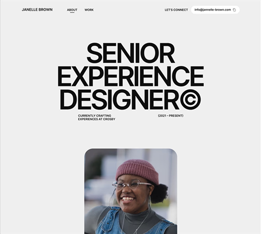
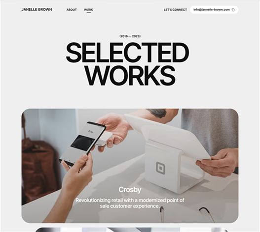
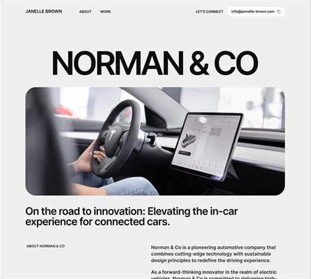

A premium Framer portfolio template thoughtfully crafted for UX/UI Designers.
UX Designer
October 2024 - February 2025
The design solution for the Olio Framer portfolio template
thoughtfully
combined modern styles with timeless design principles. Through a
unique and visually captivating design, Olio showcases UI/UX Designers'
work, highlighting their creativity and skills.
Overall, the template has successfully saved UI/UX Designers time and
mental effort, allowing them to create a stronger portfolio and land more
job opportunities.
Check out the Olio Framer portfolio template 🡥


